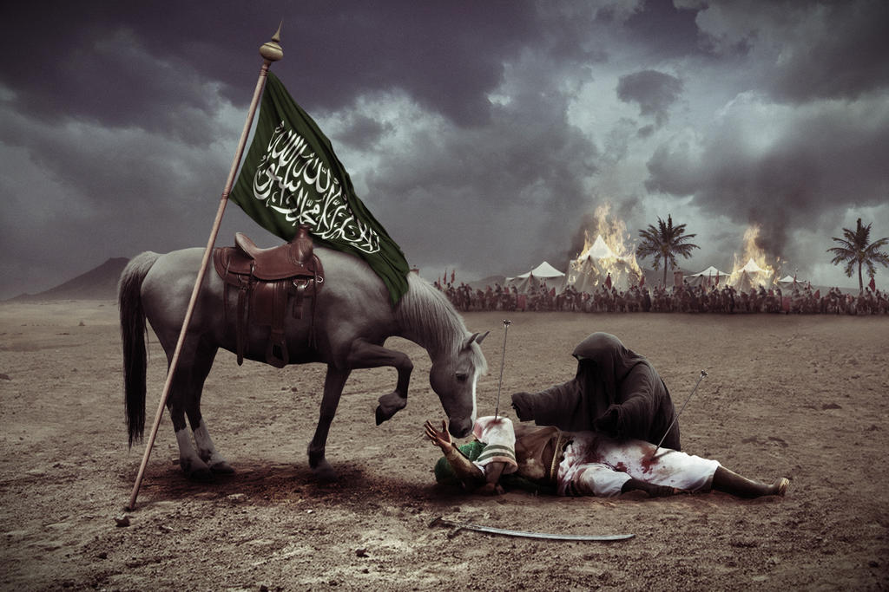
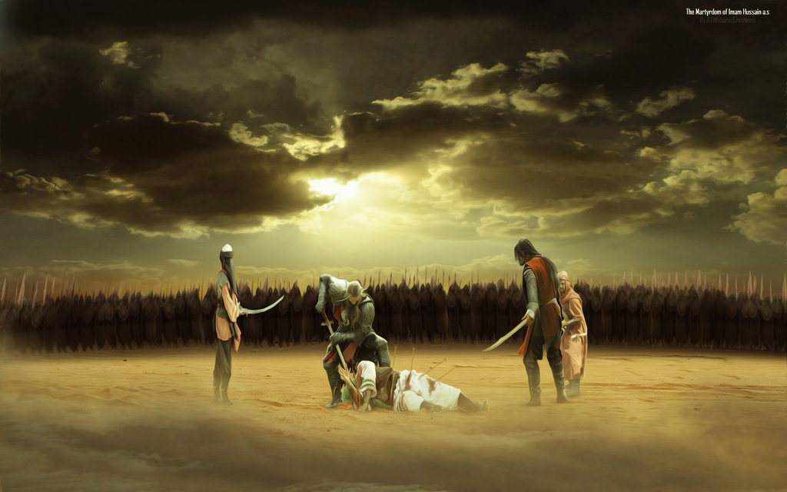
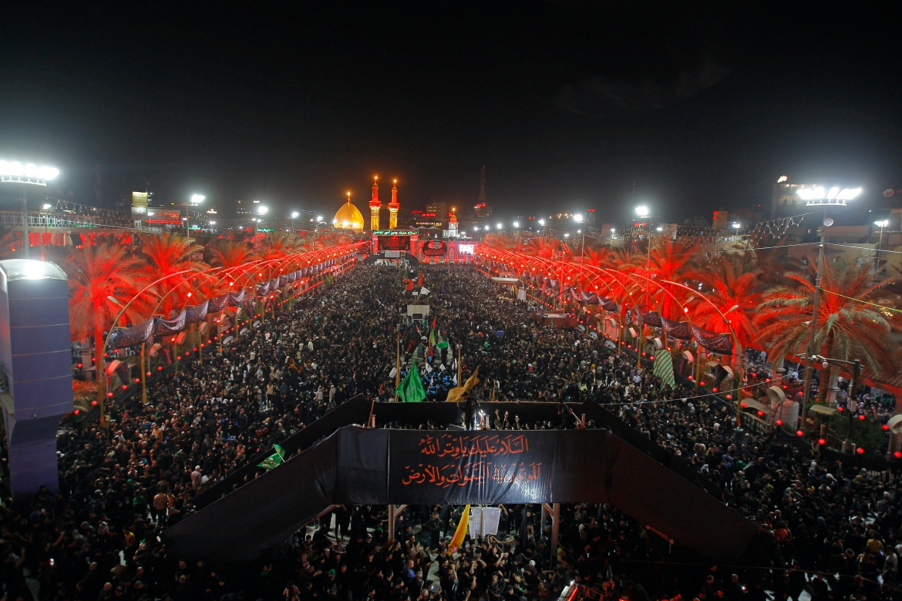
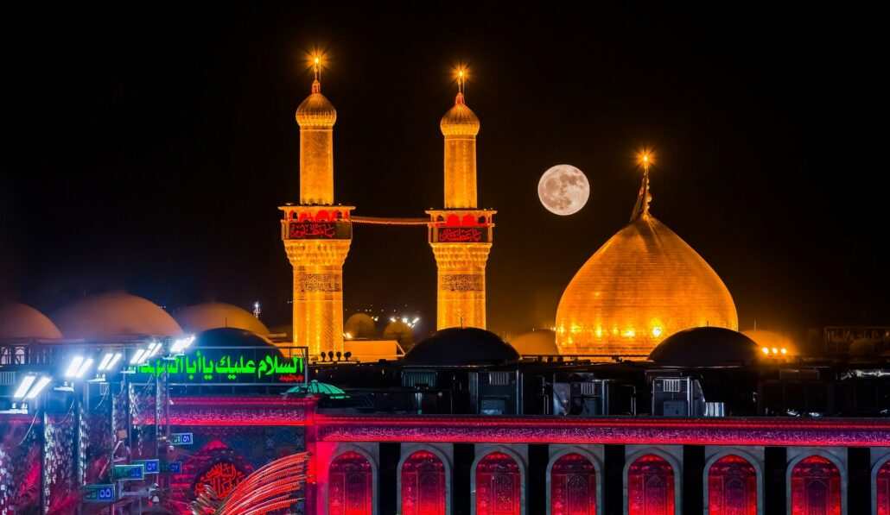
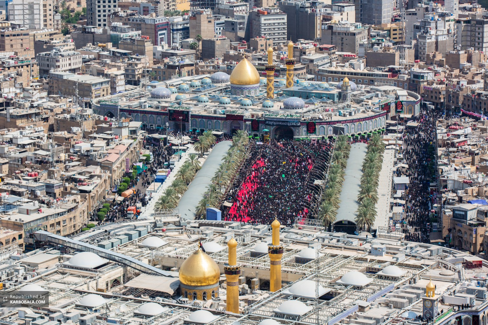
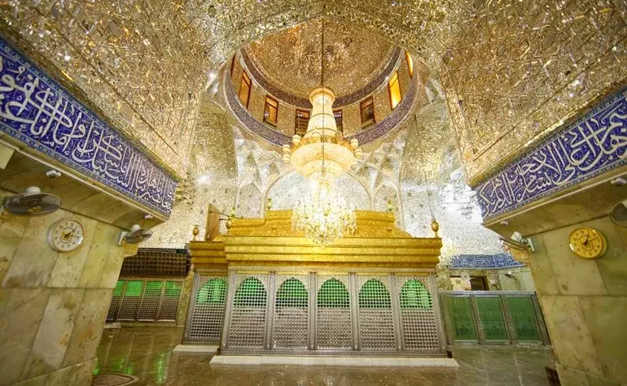

What is Muharram?
Muharram is the first month in the Hijri Islamic calendar. Muharram is regarded as a sacred month by all Muslims, due to the historical events that took place. The Shia school of thought takes the stance that Muharram is a sad month, due to the crimes that were committed against the household of the Prophet in Muharram of the year 61 Hijri (680 AD), and that these events should be celebrated and mourned every year. On the other side, the Sunni school of thought takes the stance that Muharram has little significance, and that mourning is not recommended. They do however, recommend fasting on the day of Ashura, due to their narrations that the Prophet Muhammed (ص) fasted this day upon hearing that it was the day that Prophet Musa was saved from the Pharaoh. The month of Muharram is also one of the 4 "Haram"/sacred months in Islam, in which fighting is prohibited.
Who is Imam Hussain?
Al Hussain Ibn Ali Ibn Abi Taleb (ع) is the 2nd grandson of the Islamic Prophet (ص), son of his daughter Fatima (ع), and his cousin and son in law the prince of believers Ali ibn Abi Taleb (ع). Imam Hussain (ع) is the 3rd divinely chosen, and infallible Imam of Shia Islam. Born on the 5th of Shabaan in the 4th year after the Hijra, Imam Hussain (ع) was one of the most beloved of people to Rasoolullah (ص), in which many narrations were recorded, establishing his great status, such as "Hussain is the light guidance, and the ark of salvation", "Hussain is from me and I am from Hussain", "Allah loves those who love Hussain". Even with all these virtues and proofs of his elevated status given by Rasoolullah (ص), only 50 years after the death of the messenger, Imam Hussain (ع) found himself betrayed by the Muslim ummah, as he publicly denounced the caliphate of the tyrant, Yazid Ibn Muawiyah (ل). Upon receiving many letters from the people of Kufa, expressing their support for Imam Hussain (ع), he and a handful of his family and supporters left Medina, and began a journey towards Kufa. On the way, they were intercepted on the 7th of Muharram by the army of Umar ibn Sa'd (ل), who approached the Imam (ع) with an army of 30,000 soldiers. On the 10th of Muharram, the Imam (ع), and 77 soldiers from his family and supporters were massacred, and their women were taken captive to Shaam, where the palace of Yazid (ل) was. The message of Imam Hussain (ع) was to stand against oppression, and his voice is echoed throughout history.
To find out more about the story of Imam Hussain, and his message, visit whoishussain.org
What is Karbala?
Karbala is the sacred land in which the battle of Ashura took place, and the burial place of Imam Hussain (ع), his brother al Abbas (ع), his children, and the other martyrs of Ashura. Millions upon millions of people across the globe travel to Karbala, to visit the grave of the Imam (ع), specifically on the day of Arbaeen, which commemorates the 40th day of his passing. On this day, the largest peaceful human gathering in the world takes place. In 2022, over 26 million people attended, and visited the shrine of Imam Hussain (ع)



Developed by Taha Al-Saigh, sponsored by two faithful servants of Imam Hussain